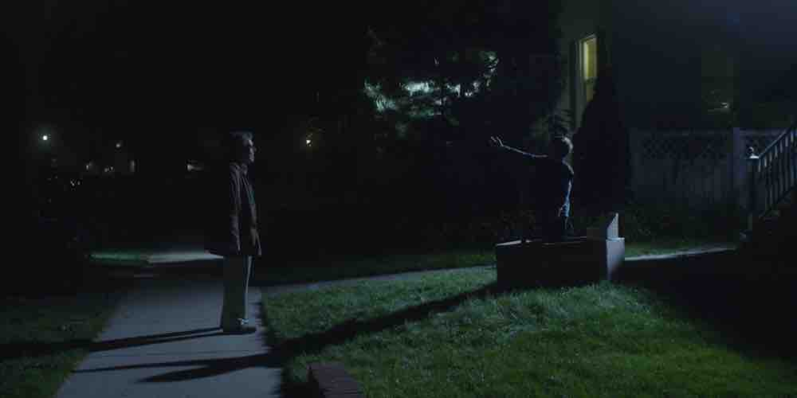

"Baby Your Mind is a Home" - Jacob Kogan
Music Video. Co-Director | Cinematographer | Co-Editor | Visual Effects | Colorist.
Feels Like We Only Go Backwards (2014)
Experimental work: Timelapse animation of plants, set to Tame Impala's "Feels Like We
Only
Go
Backwards."
Searching the Shadows (2013)
Double-exposure on 16mm film. 5m.
Very Important Shorts™ that went to festivals.

Things that run at 30fps instead of 24.
YouTube Ad for TRAC
Created for Chicago-based race timing startup
TRAC
Drowsy Chaperone Promo Video (2016)
Promo video for Jewish Theater Ensemble's The Drowsy Chaperone (2016).
TOMMY Promotional Video (2015)
Promotional video for Arts Alliance's production of The Who's TOMMY (2015).
TITANIC Promo (2015)
Trailer for the Northwestern Dolphin Show, Titanic (2015), the largest student-produced
musical
in America.
TITANIC Promo (2015)
Making of the Northwestern Dolphin Show, Titanic (2015), the largest student-produced
musical
in America.
Animal Style Promo (2014)
A promotional video for the student-produced play Animal Style. Features imagery from
transitions
that were projected throughout the show. Role: Cinematography/Editing.